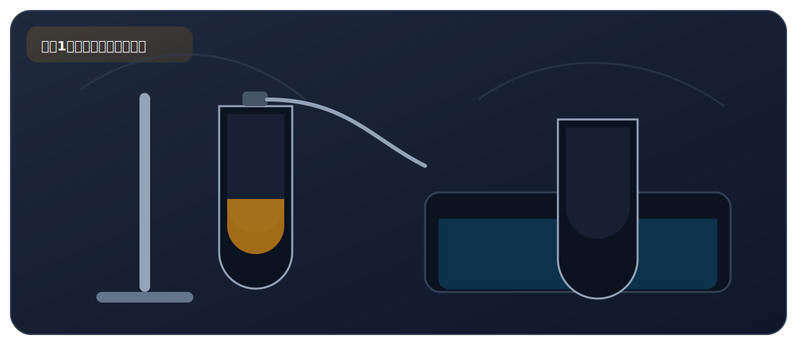

实验一、空气中氧气含量的测定

来自 PDF《化学实验基础知识及课本实验总结》的整理。建议：先读"实验原理"，再背"操作顺序"，最后用"误差分析/注意事项"拿分。
实验目标
- 测定空气中氧气约占 1/5，理解“消耗氧气→压强变小→水进入”的思路。
必背方程式
- 4P + 5O2 点燃===== 2P2O54P + 5O2 ?===== 2P2O5
核心原理
- 红磷在密闭容器中燃烧，只消耗 O2，生成固体 P2O5，使容器内气体物质的量减少、压强减小。
- 外界大气压推动水进入瓶内，进入水的体积≈被消耗的氧气体积。
关键步骤（怎么做）
- 先检查装置气密性；集气瓶内预先加少量水（吸收 P2O5、降温）。
- 用酒精灯点燃足量红磷，迅速伸入瓶中并塞紧橡皮塞，夹紧止水夹。
- 红磷熄灭后必须冷却到室温，再打开止水夹，观察水面上升至约 1/5 处。
现象（看到什么）
- 红磷燃烧产生大量白烟，放出热量。
- 冷却后打开止水夹，烧杯中的水沿导管进入集气瓶，液面上升约 1/5。
高频考点（怎么拿分）
- 为什么选红磷：能在空气中燃烧、生成固体（不是气体）、不与 N2/CO2 反应。不选木炭/硫（产物是气体，不能形成压强差）；不选铁丝（不能在空气中燃烧）；不选镁条（能与 N2、CO2 反应）。
- 结果偏小常见原因：①装置漏气 ②未冷却到室温就读数 ③红磷量不足，O2 未耗尽 ④导管中有水残留。
- 结果偏大常见原因：①点燃红磷后伸入太慢，瓶内空气受热膨胀逸出 ②塞橡皮塞时动作太慢，部分热空气外逸。
- 集气瓶内剩余气体主要是 N2：不燃烧、不支持燃烧、难溶于水、不与水反应。
安全提醒
- P2O5 有刺激性：瓶内少量水用于吸收 P2O5 防止污染空气，同时有降温作用。实验后及时通风。
自测清单
- 我能说清为什么水会上升吗？（红磷燃烧消耗 O2，瓶内压强减小，大气压将水压入瓶中）
- 我能列出 2 个“偏小”和 2 个“偏大”原因并解释吗？
- 为什么不能用木炭/硫/铁丝/镁条替代红磷？
PDF摘录（原文提取，供对照）
要点
- 选择红磷的原因：能在空气中燃烧；产物为固体；不与空气中其 他成分反应
试剂选择
- 不选择木炭和硫的原因：燃烧产物为气体，不能形成压强差 不选择铁丝的原因：Fe 不能在空气中燃烧 不选择镁条的原因：Mg 能够与空气中的 N2 和 CO2 反应 利用红磷燃烧消耗密闭容器中的氧气，使密闭容器内压强减小，
实验原理
- 在大气压的作用下，进入容器内水的体积即为减少的氧气的体 积。
实验操作
- 实验时，连接装置并检查装置气密性后，接下来的实验步骤依次 为：
- 在集气瓶中加入少量水，目的是吸收五氧化二磷（有毒）， 防止污染空气，且可吸热降温。将水面上方空间分为 5 等 份，并做标记；
- 在燃烧匙内放入足量的红磷，用酒精灯加热，点燃红磷后立 即伸入瓶中并把橡胶塞塞紧；
- 用弹簧夹夹紧乳胶管；
- 待红磷熄灭并冷却至室温后，打开弹簧夹，观察现象。
- 红磷燃烧的现象是发出黄白色火焰，产生大量白烟，放出热 量。
实验现象
- 打开弹簧夹，烧杯中的水沿导管流入集气瓶，瓶内液面上 升，集气瓶内液面应上升至约刻度 1 处。出现该现象的原 因是集气瓶内氧气被消耗，瓶内压强减小。
- O2 约占空气体积的 1/5
实验结论
- 燃烧的红磷熄灭，说明集气瓶中剩余氮气的化学性质：不燃烧 也不支持燃烧；集气瓶内水面上升至一定高度后不再变化，说明 N2 的物理性质：难溶于水，化学性质：不与水反应。
- （1）、测得氧气体积小于空气体积的 1/5
- 装置漏气,冷却至室温后，会有部分空气进入瓶内，使得测 量结果小于 1/5；
- 未冷却至室温时，就打开止水夹；
- 红磷量不足，瓶内氧气未耗尽;
误差分析
- 导管中有水残留。
- （2）、测得氧气体积大于空气体积的 1/5 塞子塞入的慢，瓶中的空气受热逸出；
- 点燃的红磷伸入集气瓶内的速度过慢；
- 止水夹未夹紧，瓶中的空气受热从导管口逸出。
- 先增大（气体受热膨胀） 集气瓶内气体 压强变化
- 后减小（红磷燃烧，O2 被消耗；熄灭后，气体冷却，此时 压强值小于初始值）
- 再回升至初始值（烧杯中的水进入集气瓶，使内外压强一 致） 拉瓦锡把少量的汞（水银）放在密闭的容器里，连续加热达
拓展阅读
- （法国化学 家） 二十天之久，结果发现有一部分银白色的液态汞变成了红色的 粉末，同时容器里的空气的体积差不多减少了五分之一。
- 拉瓦锡研究了剩余的五分之四体积的气体，发现既不能供 给呼吸，也不能支持燃烧，这些气体被称为氮气。
- 拉瓦锡再把汞表面上所生成的红色粉末（现已证明是氧化 汞）收集起来，放在另一个较小的容器里经过强热后，得到了汞 和一种气体，而且气体的体积恰好等于原来密闭容器里所减少 的空气的那部分体积。将得到的气体和剩下的五分之四体积的
- 气体混合，得到的气体跟空气的性质完全一样，拉瓦锡把这种气 体命名为氧气。
- 因而拉瓦锡就得出“空气由氧气和氮气组成，且氧气约占空 气总体积的五分之一”的结论。